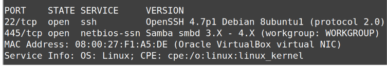
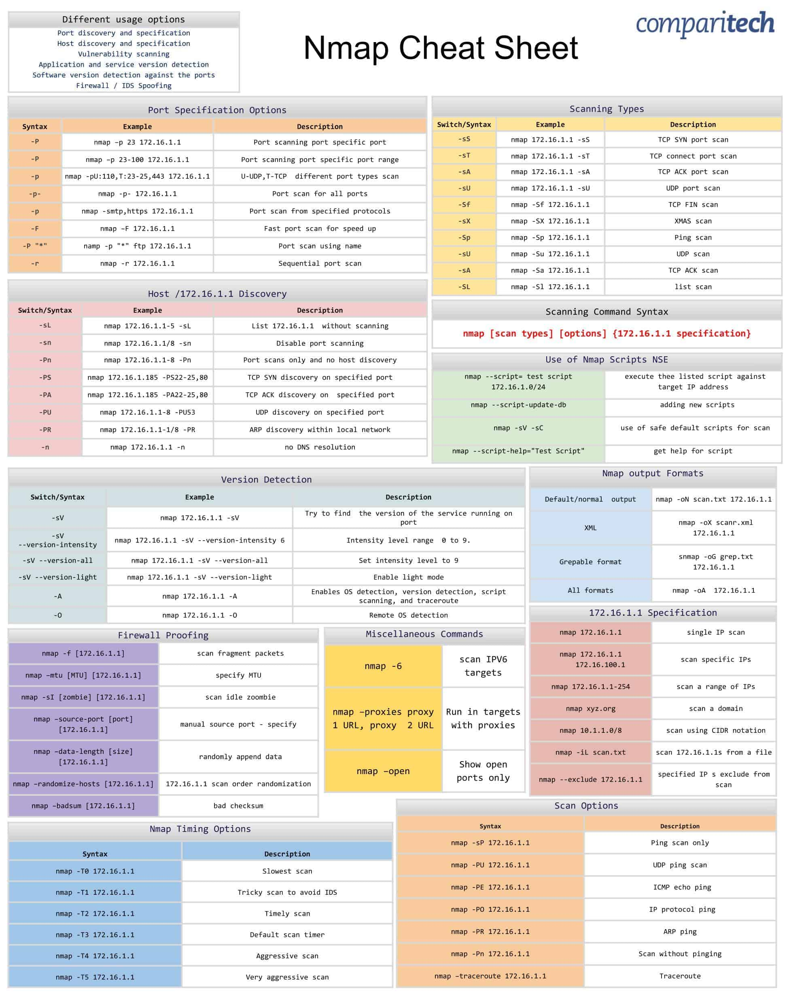

NMAP
Reconhecendo o alvo com o NMAP
Pode ser considerada uma das ferramentas mais completas para realizar varredura em redes, pois disponibiliza um grande número de opções, possibilitando realizarmos diversas varreduras em busca de vulnerabilidades e características do alvo. Essa ferramenta possui, inclusive, opções que permitem burlar sistemas de proteção, como IDS/IPS e Firewall, cujas regras poderiam bloquear ou detectar varreduras não permitidas.
Ela localiza e identifica todas as portas TCP e UDP disponíveis em um host, tentando determinar qual o serviço que está “escutando” em cada porta e é capaz de identificar o tipo de sistema operacional em execução. O Nmap é visto como uma ferramenta de segurança, usada para descobrir “brechas” em sistemas, ajudando na tarefa de monitoração e gerenciamento da rede e identificação de serviços rodando em servidores.
Sintaxe:
nmap [Scan Type(s)] [Options] {target specification}

No exemplo da figura ele foi executado de forma simples, apenas indicando o IP do alvo. Como resposta é exibido as portas e serviços disponíveis no host.
Usando o modo "verbose" "-v" para exibir mais informações do alvo. Utilize "-vv" para ter uma saída com informações mais detalhadas.

Alguns exemplos de comandos nmap
Primeiramente, descubra qual o número IP de sua máquina hospedeira. Lembre-se que a interface virtual do seu Kali Linux deverá estar configurada em modo "Bridge".
Para efeitos de exemplo, assume-se que o IP da máquina hospedeira seja 192.168.68.109. Lembre de alterá-lo para o número de sua máquina quando for executar algum comando.
Exemplo 1: Descobrindo as portas abertas de um host
Vamos descobrir quais portas de comunicação TCP estão abertas no alvo.
nmap -sT 192.168.68.109
A opção -s no script é o comando para o escaneamento. Já a opção T indica o escaneamento de portas TCP. Caso seja necessário escanear as portas UDP, altere o T para U.
A saída do comando apresentada na figura exibe 3 colunas:
1. Número da porta aberta
2. Estado da porta
3. Possível serviço que está sendo executado nesta porta
Estado das portas:
- Aberta (open) – Está ativamente aceitando conexões TCP ou pacotes UDP nesta porta.
- Fechada (closed) – Uma porta fechada está acessível (recebe e responde a pacotes de sondagens do Nmap), mas não há nenhuma aplicação ouvindo nela.
- Filtrada (filtered) – O Nmap não consegue determinar se a porta está aberta porque uma filtragem de pacotes impede que as sondagens alcancem a porta.
Exemplo 2: Descobrindo as versões dos serviços em execução
nmap -sV 192.168.68.109

Observe que na saída do comando é acrescentada uma quarta coluna, onde a versão do serviço em execução é apresentado.
Exemplo 3: Descobrindo o Sistema Operacional
nmap -O 192.168.68.109

A opção "-O" tenta descobrir qual a versão do sistema operacional do host alvo.
Exemplo 4: Selecionando as portas a serem escaneadas
É possível escolher uma ou várias portas a serem escaneadas. Para isso, usa-se a opção "-p". No primeiro exemplo vamos escanear apenas a porta 80, já no segundo exemplo iremos escanear as portas 445 e 22.
nmap -sV -p 80 192.168.68.109
nmap -sV -p 445,22 192.168.68.109

Nmap Scripting Engine (NSE)
Oferece um conjunto totalmente novo de recursos e confere uma nova dimensão para o Nmap.
Permite que o Nmap conclua uma série de tarefas, incluindo scanning de vulnerabilidades, detecção de backdoors e, em alguns casos, a exploração de vulnerabilidades.
A seguir, são apresentados alguns exemplos e exercícios para a prática do Nmap:
Para descoberta de vulnerabilidades
nmap -sV --script vuln 192.168.68.109
Encontrar malware ou backdoor
nmap -v --script malware 192.168.68.109
Cheatsheet NMAP
